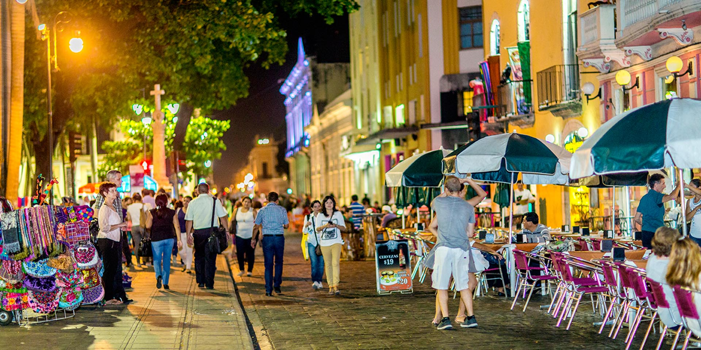

Mérida, conocida como la "Ciudad Blanca", es un destino fascinante donde la herencia maya se mezcla con la arquitectura colonial española. Su ambiente romántico, sus calles coloridas y su gran riqueza cultural e histórica la convierten en uno de los lugares más atractivos del sureste mexicano. Al recorrer sus calles, el visitante se encuentra con plazas arboladas, mansiones majestuosas y una vibrante oferta gastronómica y artesanal.
Con su atmósfera tranquila y segura, Mérida es el punto de partida perfecto para una aventura inolvidable en el sureste de México. En esta guía, te llevaremos a explorar los lugares que no puedes perderte. Desde el corazón de su centro histórico hasta maravillas naturales y arqueológicas, te mostraremos por qué Mérida es un destino que te cautivará.
Con su atmósfera tranquila y segura, Mérida es el punto de partida perfecto para una aventura inolvidable en el sureste de México. En esta guía, te llevaremos a explorar los lugares que no puedes perderte. Desde el corazón de su centro histórico hasta maravillas naturales y arqueológicas, te mostraremos por qué Mérida es un destino que te cautivará.